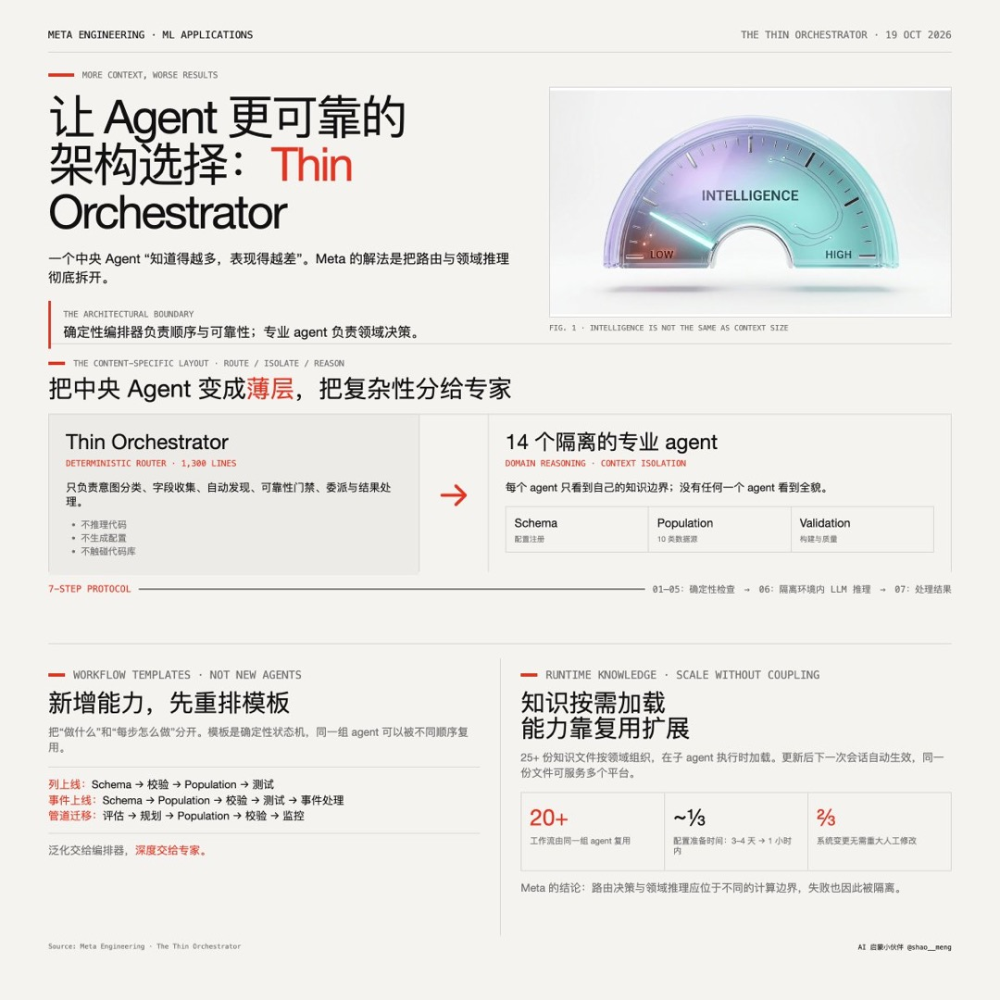
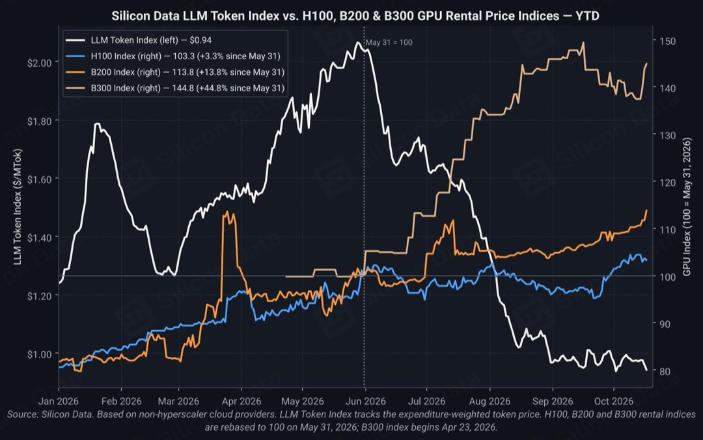
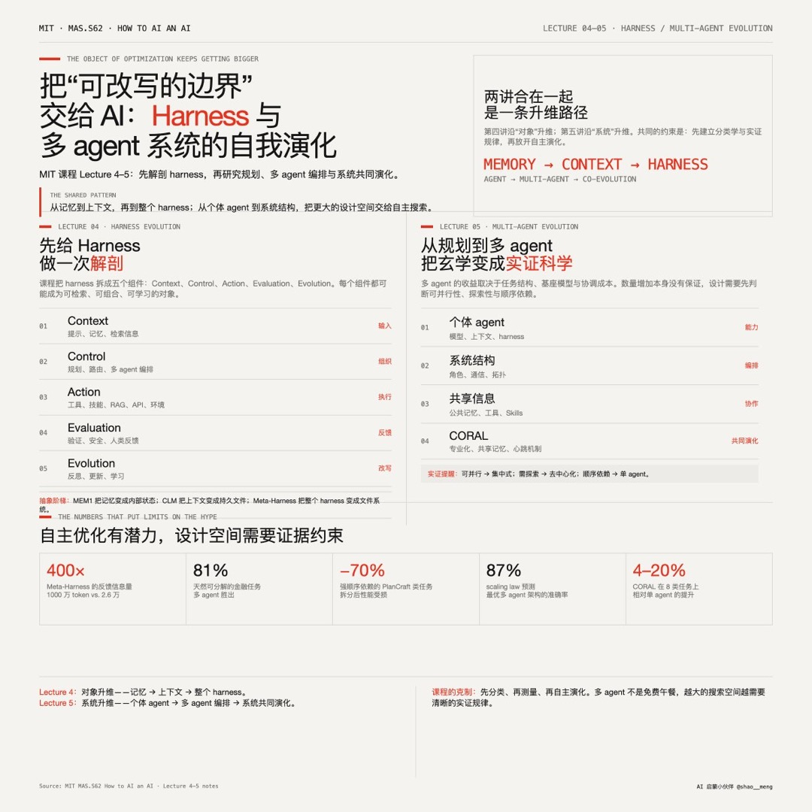

本期速览
01 Claude Code 无头 Agent
02 Meta 用瘦编排器隔离 Agent
04 MIT Agent 演化课程拆解
05 DeepSeek 新版首字延迟降四成
01｜Claude Code 无头 Agent
来源（X） · @lidangzzz · 2026-10-20 12:04
对于大多数不在大厂、不做核心Agent业务、对AI没信仰、不在AI startup、甚至他妈连写代码都不利索的人，
你们自己折腾langchain或者折腾input/output parser和MCP server去做一个垃圾agent，完全是在浪费时间。
对于你们这种人而言，最快且效果最好的方式：
1. 给claude code绑好银行卡；
2. 建一个temp folder临时文件夹，把所有关于任务相关的文档、表格、报表、图表、报告、sqlite、access数据库、pdf扫描件、数据、markdown、代码、图片、资料、指令、prompt、config等等一大堆东西，全放在里面；
3. 写一个nodejs/bunjs/python脚本，从terminal里调用claude code headless模式，讲好所有的指令和文件夹，默认开启所有权限，成功了存储在一个json file里，失败了也在json里更新状态；
4. 配置好claude code的authentication和MCP，等着让claude code自己agentically解决掉整个问题，汇报结果，充好钱，给我等；
5. 等process结束后，读取json body，进行下一步。
相信我，
这是绝大多数不在大厂、不做核心Agent业务、对AI没信仰、不在AI startup、甚至连他妈代码都写不利索的人，
这辈子能设计出来的最简单、最强大、最可靠、最皮实、最好用、最省事儿、最方便、最稳定、最可维护、最容易理解、最省钱、最省时间的宇宙级通用AI agent。
如果你能做出比claude code喂狗屎和手工function calling更好的设计，以及更精确的context management，或者你有你自己的LLM省钱妙招，比claude code更会节约cached input，或者你完全懂你在做什么事情——你不用听我这条建议，可以直接划过去，
否则对于其他99.99%的人而言，按照这个帖子的方法去做，就可以99.99999%成功，
而且在你的能力范围内，你也根本设计不出来比上面这个方法更好的ai agent出来。
02｜Meta 用瘦编排器隔离 Agent
来源（X） · @shao__meng · 2026-10-20 10:34
一个中央主 Agent “知道得越多，表现得越差”；这不是提示词问题，是架构问题！
Meta 团队最初用单个“全能 Agent”自动化推荐系统的数据列上线流程：它同时装载了所有领域知识、schema、代码生成规则、路由逻辑和校验要求。结果在演示中正常，在生产环境中开始产生幻觉。具体表现为知识交叉污染：把 A 子系统的命名规范套用到 B 上，把适用于某数据源的代码生成模式用错对象。
这一现象有实证支撑：他们引用 Mount Sinai 的研究，多 Agent 编排系统在 80 任务批次下保持 65.3% 准确率，而单 Agent 仅 16.6%，token 消耗最多降低 65 倍。原因在于任务隔离阻止了上下文互相干扰，上下文超过某个阈值后，更多知识反而降低性能。
解决方案：两层架构 + 严格的职责边界
第一层：确定性的瘦编排器（约 1300 行代码），零领域工作。 它把 20+ 工作流路由到 14 个专业 Agent，自己只做三件事：意图分类、收集必要字段、执行可靠性检查。它从不推理代码、不生成配置、不触碰代码库。
第二层：14 个上下文隔离的专业 Agent。 如 schema 管理 Agent、population Agent（负责 10 种数据源的代码生成）、校验 Agent 等。关键设计是，没有任何一个 Agent 看到全貌，这是刻意为之。
每个请求走固定的 7 步协议：读取子 Agent 指令文件 → 查重 → 收集用户字段 → 自动推断（repo 类型等）→ 可靠性门禁检查 → 委派子 Agent → 处理结果。其中第 1–5 步和第 7 步全部是确定性逻辑，只有第 6 步涉及 LLM 推理，且推理发生在只装载自身领域知识的隔离环境中。
最有工程价值的洞察：模板复用而非新增 Agent
他们把“做什么”（workflow 模板）与“每步怎么做”（子 Agent）分离。模板是确定性状态机，例如：
· 列上线：Schema → 校验 → Population → 测试
· 事件上线：Schema → Population → 校验 → 测试 → 事件处理
· 管道迁移：评估 → 规划 → Population → 校验 → 监控
支持管道迁移这个全新能力时，只需新增一个模板重新排列现有 Agent，“零新增 Agent 代码，完整生产能力”。所有子 Agent 结构统一（知识源、预收集清单、工作流步骤、错误-解决方案映射），第 15 个 Agent 与第一个在结构上完全一致，新增能力变成模板化工作。
知识在运行时按需加载而非内嵌：25+ 知识文件按领域组织，每份通常几千 token，更新后在下一次会话自动生效，且同一份文件可服务多个平台实现。
博客地址
https://engineering.fb.com/2026/10/19/ml-applications/thin-orchestrator-ai-agent-architecture/

03｜GPU 租金涨 Token 单价降
来源（X） · @yuyy614893671 · 2026-10-19 22:55
英伟达B200，B300GPU集群的租赁价格还是在持续快速上涨
而LLM的token单价持续下降
引用内容
Silicon Data @silicondata
中文译文
我们一周前分享的同样的信息，似乎只得到了进一步的印证，因为 B200 和 B300 的 GPU 租赁价格持续大幅上涨！
另外，暗色模式很酷！所以今后可以期待看到更多暗色模式。😄
原文
The same message we had shared a week ago seems to only have strengthened since as B200 and B300 GPU rental prices continue to rise sharply!
Also, dark mode is cool! So expect to see more of it going forward. 😄

04｜MIT Agent 演化课程拆解
来源（X） · @shao__meng · 2026-10-20 09:52
@pliang279 老师的 Lecture 4-5 连续两讲「Harness evolution」强烈建议阅读学习，分别覆盖了 Harness Evolution（harness 组件、记忆、工具与技能演化）和 Multi-Agent Evolution（规划、任务分解、多 agent 系统与演化）
# Lecture 4：先给 Harness 做解剖，再谈让它演化
https://mit-mi.github.io/how2ai-course/fall2026/schedule/lec4%20-%20harness.pdf
课程把 Harness 解剖为五个组件，这个框架贯穿两讲：
· Context：提示、记忆、检索信息
· Control：规划、路由、多 agent 编排
· Action：工具、技能、RAG、API、环境
· Evaluation：验证、安全、人类反馈
· Evolution：反思、更新、学习
记忆部分：一张三轴分类法 + 四个代表系统
讲义用三个轴组织整个记忆研究空间：存什么（反馈/技能/轨迹/语义事实）、如何表示（文本/结构化/多模态/参数）、存在哪里（上下文/参数/外部），外加如何复用（检索/改编/组合/迁移）。
然后沿“存在哪里”排布了四个系统：
· @MemGPT（外部记忆）：把 LLM 类比为操作系统，记忆的读写变成 agent 自己的函数调用；
· @mem0ai（外部记忆）：记忆结构化为实体-关系三元组图，支持 add/update/delete/noop 四种操作；
· MEM1（上下文内记忆，授课者自己组的工作）：这是本讲着墨最多的部分。针对“推理上下文不断增长导致复杂度与遗忘”的问题，MEM1 让模型每步生成一个整合了推理与记忆的内部状态，然后丢弃全部历史；上下文大小恒定，且可用结果奖励端到端训练模型学会“压缩”。实验展示了三个涌现行为：分类存储每个问题的关键信息、答完一题先更新记忆再进入下一题、多次搜索无果后学会跳过该题。这些行为没有任何一个是显式编程的。
· Reflexion / ExpeL（经验化记忆）：轨迹存短期记忆、自我反思存长期记忆；ExpeL 进一步把“这条经验是否有用”的反馈也存进去。
Context Language Models（CLM） 是记忆部分的收束：让模型把自己的整个上下文当作一个文件，用 Bash 命令随意编辑，编辑与真实上下文同步；创建/删除上下文文件即可实例化/终止子 agent；记忆、上下文管理和多 agent 结构被统一成“文件操作”。
工具与 Skills 部分：从 Toolformer 到 Meta-Harness
谱系是：Toolformer（模型自学单步工具调用）→ ToolLLM（扩展到多步、16000+ API）→ CodeAct（关键论断：代码是元工具，一次动作即可组合控制流、库与多次操作，实验显示用代码做工具调用成功率最高、交互轮数最少）→ Skills 层：Skills 可以表示为文本或代码（后者更可组合）、可作为代码中的抽象类（PolySkill）、可从成功与失败的轨迹中归纳为可复用工作流（Agent Workflow Memory）→ Voyager 的 Skills 库（自动课程生成 + 环境反馈 + Skills 归纳进库）。
压轴的 Meta-Harness 把整讲推向顶点：现有 LLM 优化方法只给优化器看“简短摘要、标量分数、部分历史候选”，而 harness 复杂得多。Meta-Harness 把整个 harness 表示为文件系统，完整源代码、分数、全部执行轨迹都放在里面，让 proposer（Claude Code，用 grep/cat 阅读）把失败回溯到具体的 harness 决策上，反馈信息量是 prior 方法的近 400 倍（1000 万 token 对 2.6 万）。提示、RAG、Skills、工具、记忆、程序循环全部统一为文件系统中可优化的对象。
本讲最重要的一页：抽象阶梯
最后一页总结是全讲义的精华，Liang 老师点出他最欣赏的三个方法共享同一模式：
· MEM1：把记忆当作上下文中的内部状态，由 LLM 自主更新
· CLM：把整个上下文当作持久文件，由 LLM 自主维护改写
· Meta-Harness：把整个 harness 当作文件系统，由 LLM 自主修改
共同点：简单、无手工设计、端到端；可自主优化的对象沿“记忆 → 上下文 → harness”不断升维；且同一范式在 zero-shot、上下文学习、微调三种模式下都可扩展。这是整门课“自演化”思想最凝练的表达：不让 AI 在某一点上变强，不断扩大“什么是可以被 AI 自己改写的”边界。
# Lecture 5：从规划到多 Agent，把玄学变成实证科学
https://mit-mi.github.io/how2ai-course/fall2026/schedule/lec5%20-%20multi%20agent.pdf
规划部分：三个关键问题
讲义先明确规划的核心问题：规划何时有用、何时有害？计划如何表示？何时该改计划？ 结论清晰：基于提示的规划（CoT、Least-to-Most）适用于纯文本、无副作用、可回退的场景；一旦计划作用于真实世界、改变 agent 状态、不可逆，就必须“规划-执行-观察-重规划”。后续案例展示了谱系：大小模型分工（大模型规划 + 7B 模型执行 GUI 动作）、人在回路的不确定性澄清、合成数据训练规划器、采样多条计划估计不确定性（校准规划）、以及“Thinking vs Doing”，测试时不只是想，而是真实执行、看反馈、再重试。
多 Agent 部分：五条实证发现
这部分以 Towards a Science of Scaling Agent Systems（Nature Machine Intelligence 2026）为主线，讲义没有停留在“多 agent 更强大”的流行叙事，而给出五条冷静的实证结论：
1. 多 agent 只对特定任务结构有效。金融 agent 任务天然可分解（收入/成本/市场），MAS 赢 81%；PlanCraft 类任务有强顺序依赖，拆分反而伤害，MAS 输 70%。指南：可并行 → 集中式；需探索 → 去中心化；顺序依赖 → 单 agent。
2. 收益随基座模型而异：OpenAI 模型成本增加性能却平台化；Google 模型成本高性能高；Anthropic 模型上 MAS 甚至可能伤害性能。
3. agent 数量越多不一定越好：工具密集型任务（16 个工具的工作流）受协调开销拖累，且惩罚随环境复杂度复利式累积。
4. 异构混合可以打败更强的单一基座：不需要处处用贵模型，“廉价编排器 + 昂贵执行子 agent”是好用配置；且若单 agent 基线已超 45%，MAS 反而有害。
5. 性能可预测：以模型、任务、MAS 配置为参数的 scaling law 能以 87% 的准确率预测最优架构，从“碰运气试配置”走向 agent 设计的原则性科学。
这五条与阅读清单里的 "Why Do Multi-Agent LLM Systems Fail?" 一起，构成课程对多 agent 热潮的实证纠偏。
多 Agent 演化：CORAL
既然多 agent 的设计空间（任务、基座、拓扑）如此敏感，下一步就是让它自主演化；可以演化的对象有三个层次：个体 agent（模型/上下文/harness）、系统结构（角色/通信/拓扑）、共享信息（公共记忆/工具/Skills）。代表工作 CORAL（正是本课 TA Ao Qu 的一作论文）：多 agent 专业化、高度自主、共享记忆、心跳机制维持持续运行；在数学、算法、系统优化等 8 个任务上取得新 SOTA，多 agent 演化比单 agent 带来 4%–20% 提升。其分析回答了“为什么共同演化有用”：36% 的演化尝试以其他 agent 为父节点，这些尝试的改进率 17%（平均仅 9%）；跨 agent 的信息转移是收益的真实来源；各 agent 探索方向重叠度低（Jaccard 0.3–0.4，一半以上探索是独特的）；贡献均衡，无搭便车者。
# 两讲放到一起看：自主优化的边界在哪里？
第四讲沿“对象升维”推进：记忆 → 上下文 → 整个 harness（文件 → 文件系统），每一级都是把更大的一块系统交给 LLM 自主改写；
第五讲沿“系统升维”推进：个体 agent 的规划 → 多 agent 编排 → 多 agent 系统本身的演化（角色/拓扑/共享记忆），每一级都是把更大的设计空间交给自主搜索。
而两讲都保持着同一分批判克制：第四讲强调“简单、无手工设计、端到端”才可扩展，第五讲用五条实证发现反复提醒“多 agent 不是免费午餐”。先建立严格的分类学与实证规律，再把剩余的设计空间交给自主演化，这既是这两讲的教学结构，也是这门课对“如何研究自演化 AI”这一元问题给出的方法论答案。

引用内容
meng shao @shao__meng
中文译文
原文
05｜DeepSeek 新版首字延迟降四成
来源（X） · @kuaidaoqingyi · 2026-10-20 09:59
从这几天的数据我看了一下，别说跟之前比较慢的 GLM 相比了，就是跟上一版本的 DeepSeek-V4.1-flash 相比，首字出字中位数：5.7秒→3.0秒。最慢那类复杂题：28.7秒→11秒。200道难题，掐断从10%掉到2%。Token也更省。
梁圣都不舍得给一个 4.2 的版本号吗？